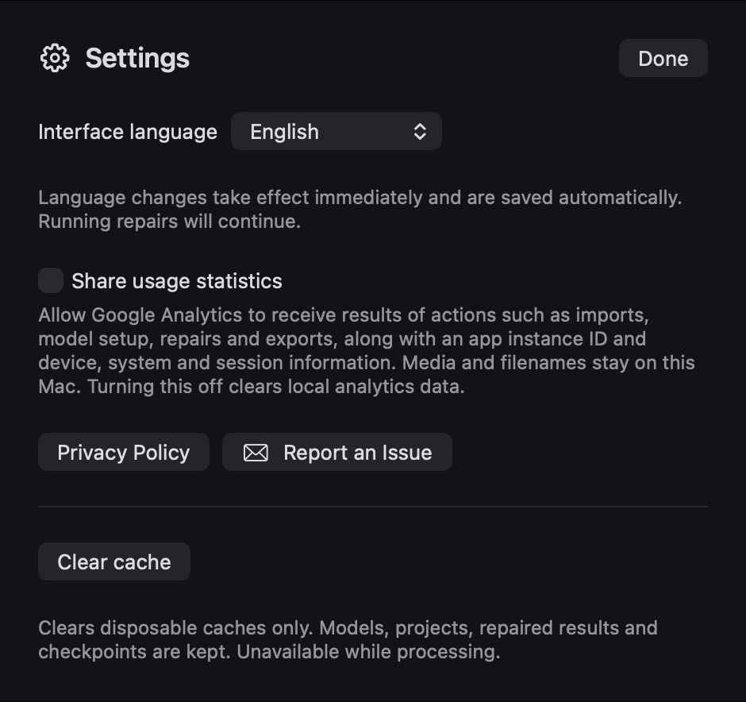

Bring your memories
into focus.
Improve videos and photos with AI while keeping your media on your Mac. Preview first, choose a range, and save your project to continue later.
Download or provide a model first; restoration then works offline. Requires an Apple Silicon Mac with 8 GB of memory or more, running macOS 14 or later. Model download: about 7.79GB.
Restore five seconds of a flume experiment
Follow the steps in English to import the footage, select the first five seconds and play the result. The wait is shortened. The final comparison plays the 640 × 480 original alongside the 1280 × 960 restoration.
This video could not be played on this page. Open the MP4 file
The USGS filmed water flowing over an eroded sediment bed in its experimental flume on September 22, 1999. View the original USGS record
Watch the demo in Chinese, English, Spanish and French (MP4)
See the app in use
Open a screenshot at full size. The workbench and duration dialog are from the English walkthrough of the flume experiment.



Media credits
Video: Adrien JACTA / Pexels · Pexels License
Photo: Nathan Anderson / Unsplash · Unsplash License